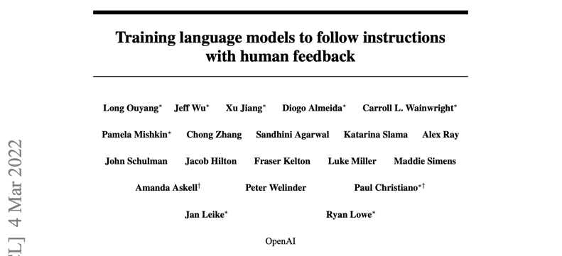
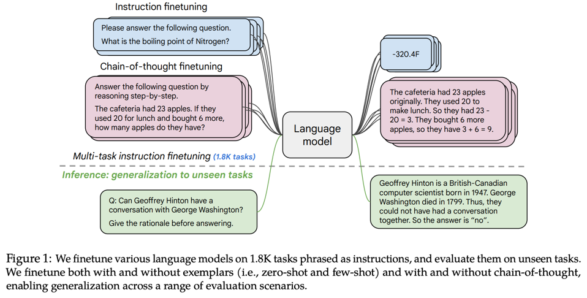
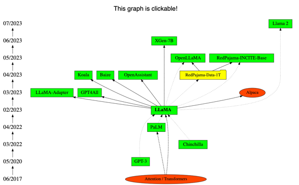
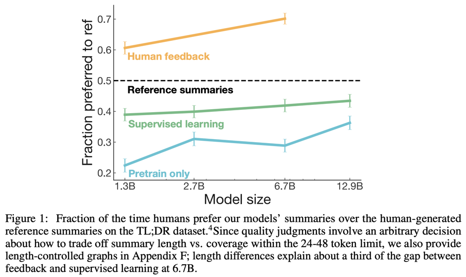
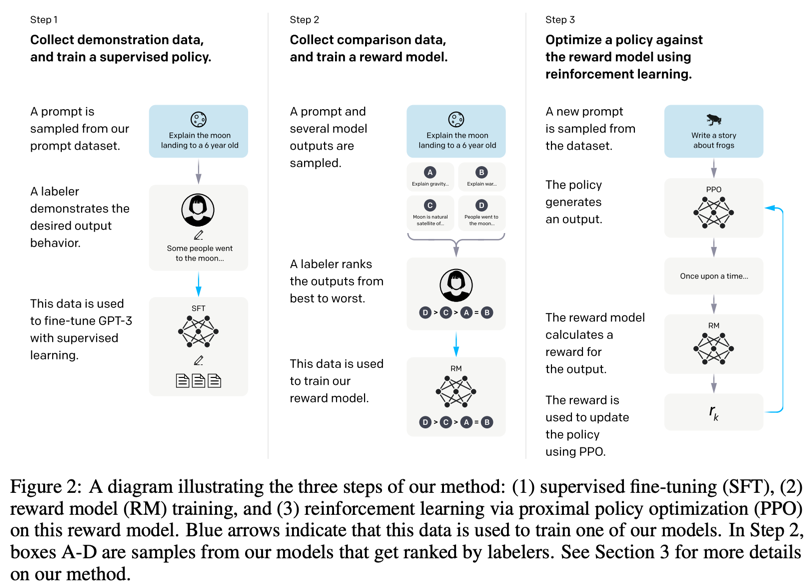
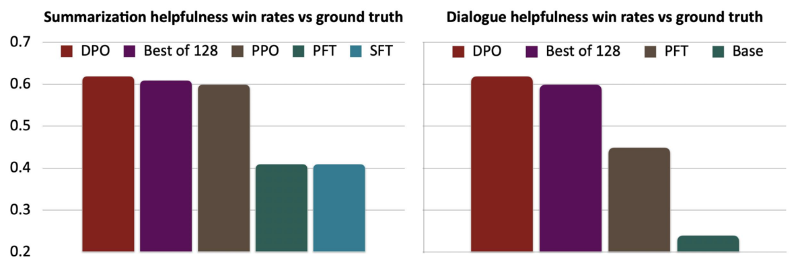

Advanced machine learning
After pretraining steps: RLHF, DPO and prompting
Alex Avdiushenko
April 16, 2025
Instruction tuning
Scaling Instruction-Finetuned Language Models
The release of LLaMA led to open-source attempts to "create" instruction tuning data
Limitations of Instruction Finetuning?
- Expensive: Collecting ground-truth data for tasks is costly
- Subtle Limitations, can you think of any?
- Problem 1:
Open-ended creative generation tasks have no right answer.
Example: "Write me a story about a dog and her pet grasshopper" - Problem 2: Language modeling penalizes all token-level mistakes equally, but some errors are worse than others
- Problem 1:
Open-ended creative generation tasks have no right answer.
- Even with instruction finetuning, there is a mismatch between the LM objective and the objective of "satisfying human preferences"!
- Can we explicitly attempt to satisfy human preferences?
RLHF (Reinforcement Learning with Human Feedback)
- Let’s say we were training a language model on some task (e.g., summarization)
- For each LM sample \(s\), imagine we had a way to obtain a human reward of that summary: \( R(s) \in \mathbb{R} \), where higher is better
Now we want to maximize the expected reward of samples from our LM: \[ \mathbb{E}_{\hat{s} \sim p_{\theta}(s)}\left[ R(\hat{s}) \right] \to \max_{\theta} \]
Problem 1: Human-in-the-loop is expensive
Solution: Instead of directly asking humans for preferences, model their preferences as a separate (NLP) problem! [Knox and Stone, 2009]
Framework for Training an Agent Manually via Evaluative Reinforcement (TAMER)
Problem 2: Human judgments are noisy and miscalibrated
Solution: Instead of asking for direct ratings,
ask for pairwise comparisons,
which can be more reliable
Bradley-Terry [1952] paired comparison model
\[ J_{RM}(\phi) = -\mathbb{E}_{({\color{green}s^w}, {\color{red}s^l}) \sim D}\left[\log \sigma(RM_{\phi}({\color{green}s^w}) - RM_{\phi}({\color{red}s^l}))\right] \]"Winning" sample \({\color{green}s^w}\) should score higher than "losing" sample \({\color{red}s^l}\)
RLHF: Optimizing the learned reward model
We want to optimize:
\[ \mathbb{E}_{\hat{y} \sim p_{\theta}^{RL}(\hat{y} | x)} [RM_{\phi}(x, \hat{y})] \]Do you see any problems?
- Learned rewards are imperfect; this quantity can be imperfectly optimized
- Add a penalty for drifting too far from the initialization:
This penalty prevents us from diverging too far from the pretrained model, known as the Kullback-Leibler (KL) divergence.
Learning to summarize from human feedback
Training LM to follow instructions with HF
ChatGPT = Instruction Finetuning + RLHF for dialog agents
Methods
(Instruction Finetuning!)
We trained this model using Reinforcement Learning from Human Feedback (RLHF), using the same methods as InstructGPT, with slight differences in data collection. Initially, we used supervised fine-tuning, where human AI trainers provided conversations, playing both user and assistant roles. We mixed this new dialogue dataset with the InstructGPT dataset, converting it into dialogue format.
To create a reward model, we collected comparison data from conversations. We used Proximal Policy Optimization to fine-tune the model over several iterations.
(RLHF!)
Can We Simplify RLHF? Towards Direct Preference Optimization
- Current pipeline is as follows:
- Train a reward model \( RM_{\phi}(x,y) \) to produce scalar rewards for LM outputs, trained on a dataset of human comparisons
- Optimize pretrained (possibly instruction-finetuned) LM \( p_{\theta}^{PT}(y \mid x) \) to produce the final RLHF LM \( p_{\theta}^{RL}(\hat{y} \mid x) \)
- What if there was a way to write \( RM_{\phi}(x,y) \) in terms of \( p_{\theta}^{RL}(\hat{y} \mid x) \)?
- Derive \( RM_{\theta}(x,y) \) in terms of \( p_{\theta}^{RL}(\hat{y} \mid x) \)
- Optimize parameters \(\theta\) by fitting \( RM_{\theta}(x,y) \) to the preference data instead of \( RM_{\phi}(x,y) \)
- How is this possible? The only external information to the optimization comes from the preference labels
Direct Preference Optimization (DPO)
- Recall how we fit the reward model \( RM_{\phi}(x, y) \):
- Notice that we only need the difference between the rewards for \( {\color{green}y^w} \) and \( {\color{red}y^l} \). Simplify for \( RM_{\theta}(x, y) \):
- The final DPO loss function is:
We have a simple classification loss function that connects preference data to language model parameters directly!
DPO results
Summary (DPO and RLHF)
- We aim to optimize for human preferences by ranking LM-generated answers instead of direct writing or scoring
- Reinforcement Learning from Human Feedback (RLHF):
- Train a reward model using comparison data to predict scores for completions
- Optimize the LM to maximize these scores (with KL-constraint)
- Effective but computationally challenging
- Direct Preference Optimization (DPO):
- Optimize LM parameters directly using binary classification
- Simple, effective, similar to RLHF, but without online data use
Prompting as a Prior
Prompts are a human-interpretable method for providing a prior over the parameters of the model!
This can be used in place of fine-tuning, or combined with fine-tuning.
Behind the scenes, messages are converted to token strings
LLaMa
Sys. [INST]
<< SYS >>
You are an assistant that …
<< SYS >>
[/INST]
User [INST]This movie is great.[/INST]
Asst. Positive.
Alpaca
Sys. ### Instruction:
You are an assistant that …
User ### Instruction:
This movie is great.
Asst. ### Response:
Positive.
Post-processing of answer
- Based on the answer, select the actual output
- For instance:
- Taking the output as-is
- Formatting the output for easy visualization
- Selecting only parts of the output that you want to use
- Mapping the outputs to other actions
Chain-of-Thought Prompting
Chain-of-Thought (CoT) prompting is a method for generating prompts that guide the model to produce more coherent and focused responses
Downside of prompt-based learning
- Inefficiency: The prompt needs to be processed every time the model makes a prediction
- Poor performance: Prompting generally performs worse than fine-tuning [Brown et al., 2020]
- Sensitivity to the wording of the prompt, order of examples, etc.
- Lack of clarity regarding what the model learns from the prompt. Even random labels work [Kossen et al., 2023]!
From Language Models to Assistants
-
Zero-Shot (ZS) and Few-Shot (FS) In-Context Learning
- No finetuning needed, prompt engineering (e.g. CoT) can improve performance
- Limits to what you can fit in context
- Complex tasks will probably need gradient steps
-
Instruction finetuning
- Simple and straightforward, generalizes to unseen tasks
- Collecting demonstrations for so many tasks is expensive
- Mismatch between LM objective and human preferences
-
Reinforcement Learning from Human Feedback (RLHF)
- Directly model preferences (cf. language modeling), generalizes beyond labeled data
- RL is very tricky to get right
- Human preferences are fallible; models of human preferences even more so